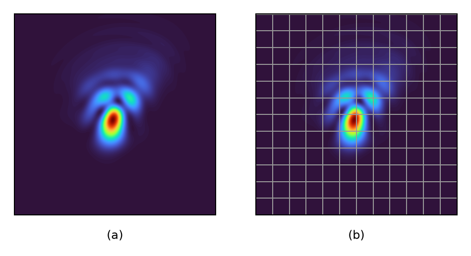
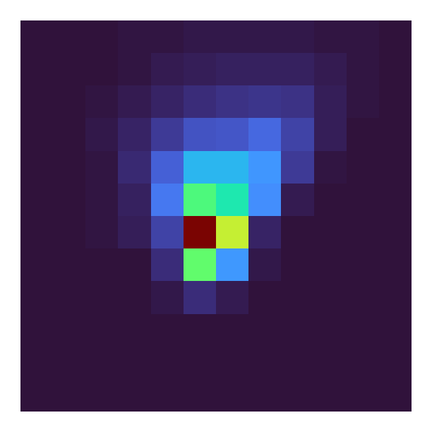
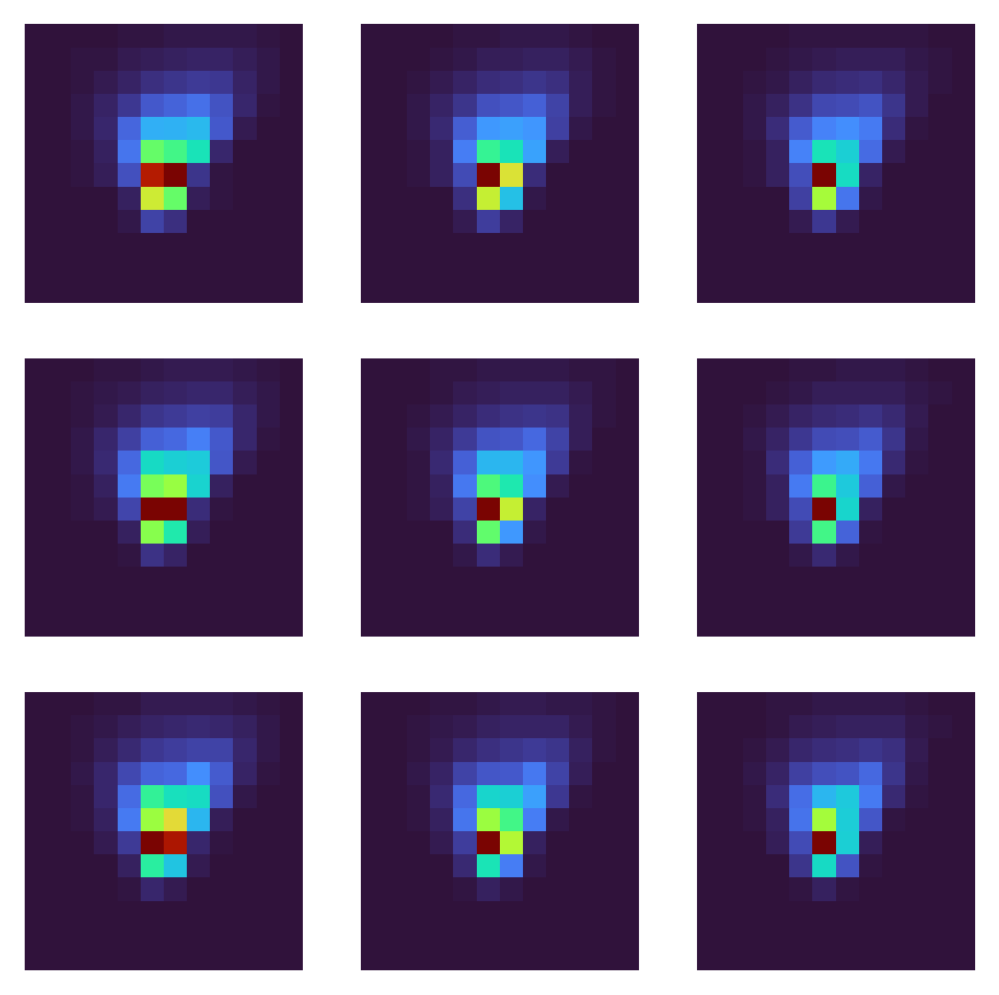

Resampling oversampled images to native detector sampling#
Diffraction calculations are usually performed on a grid that is finer than the detector’s pixel pitch. Oversampling ensures the intensity is not aliased (the optical cutoff frequency of a typical imaging system lies above the detector’s Nyquist frequency) and makes it possible to represent effects that occur on sub-pixel scales. This note describes two equivalent approaches for resampling oversampled data to a detector’s native sampling.
Pixel integration is convolution followed by sampling#
Before we describe the two resampling approaches it is worth exploring the spatial aspect of how a detector digitizes a light field. An ideal square pixel with pitch \(p\) and a 100% fill factor collects all of the power falling on its area (integration). For a detector with \(N_r\) rows and \(N_c\) columns, the signal in the pixel in row \(r\) and column \(c\) (\(r = 0 \ldots N_r - 1\), \(c = 0 \ldots N_c - 1\)) is
where \(I(u,v)\) is the irradiance in the image plane, \(\Pi\) is the rectangle function, and \((u_c, v_r)\) is the center of the pixel. Equation 1 is a two-dimensional convolution of the image plane intensity with the pixel aperture function. Defining the pixel aperture function as \(\Pi_{px} = \Pi(u/p)\Pi(v/p)\), equation 1 becomes
Integrating the image over each pixel is exactly equivalent to convolving the image with the pixel aperture and then point-sampling the result at the pixel centers. The rest of this note will show how to implement both of these approaches using built-in lentil functions. Let \(f\) be the oversampled PSF computed with an oversampling factor of \(M = 100\) (Figure 1(a)) on a \(N_r \times N_c = 12 \times 12\) detector grid with pixels spaced \(p/M\) (Figure 1 (b)).

Figure 1: Oversampled PSF#
Method 1: Rebinning#
The direct (rebinning) approach evaluates the integral in Equation 1 by summing the \(M \times M\) block of oversampled samples that fall inside each pixel:
where \(i\) and \(j\) index the sub-pixel samples within each block.
This functionality is provided by lentil’s rebin() function:
>>> psf_rebin = lentil.rebin(psf, factor=100)
Figure 2: Rebinned PSF at native detector sampling.#
Method 2: Pixel MTF convolution and sampling#
The second approach implements Equation 2 by first convolving the oversampled image with the pixel aperture and then extracting one sample per pixel.
1. Convolution: For a square pixel with 100% fill factor, its aperture function is a \(\mathrm{rect}()\) function in the spatial domain or a \(\mathrm{sinc}()\) function in the frequency domain. By the convolution theorem, we can evaluate Equation 2 by multiplying the image spectrum with the frequency domain representation of the pixel aperture function:
where \(\nu_x, \nu_y\) are frequencies in cycles per oversampled image sample.
2. Sample: Select one sample from each oversampled \(M \times M\) block:
where offset selects the sub-pixel phasing (details below). Note that
because \(g\) holds pixel averages of \(f\), the result must be
multiplied by \(M^2\) to recover the power in each pixel:
These operations are implemented in lentil via the lentil.detector.pixel() and
sample() functions:
>>> psf_pixel = lentil.detector.pixel(psf, oversample=100)
>>> psf_pixel_sample = lentil.sample(psf_pixel, oversample=oversample)
>>> psf_pixel_sample *= 100**2

Figure 3: PSF convolved with the pixel MTF and then sampled at native detector sampling.#
Pixel phasing#
The offset argument to lentil.sample() chooses which sample within
each block is kept. This is equivalent to shifting the pixel grid relative to
the image in steps of \(1/M\) pixel. An offset of \(+o\) samples moves
the image by \(-o/M\) pixels in the resampled result. Figure 7 shows the
natively sampled PSF for offsets of \(\pm 15\) samples (\(\pm 0.15\)
pixel) in each axis. All nine images are computed from the same convolved
array \(g\), and each contains the same total power. This makes method 2 a
convenient way to generate PSFs at many sub-pixel positions, for example to
model pointing jitter or dithered observations, from a single diffraction
calculation.

Figure 7: Natively sampled PSF for nine pixel phasings. The offset in \(y\) varies down the rows and the offset in \(x\) varies across the columns, in steps of 0.15 pixel.#
Rebinning can produce exactly the same phasings by shifting the block
boundaries, i.e. by cropping the oversampled array \(o\) samples later
before calling lentil.rebin().
Edge effects#
The Fourier transform in Equation 4 performs a circular convolution so values
near an edge of the array wrap around to the opposite edge. With offset=0
and odd \(M\) the pixel-sized window stays within its own block, so only
the small ringing of the band-limited kernel wraps. For any other phasing, the
windows of the edge pixels extend past the array and pick up samples from the
far side. To avoid this effect, compute the oversampled PSF over a field at
least one native pixel larger than needed on each side, resample, and then crop
the edge pixels.